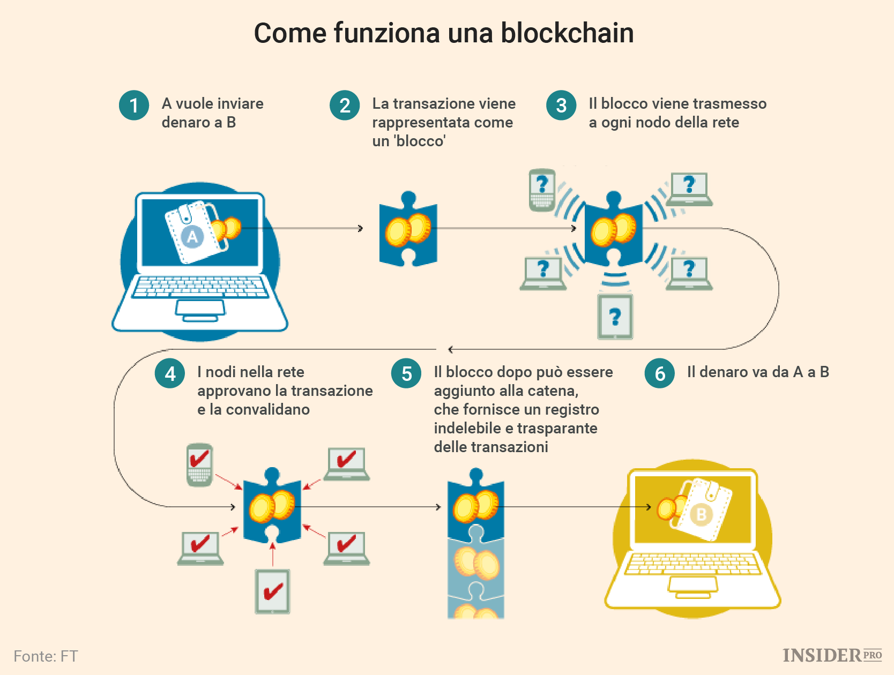

PROGETTAZIONE E REALIZZAZIONE DI UN WEBSITE SU CRIPTOVALUTE
← Funzionamento della Blockchain →
Questo modello distribuito, Distributed Ledger Technology, è implementato all’interno di una rete di dispositivi informatici, spesso normali personal computer che possono però anche includere, per usi specifici come nel settore delle criptovalute, macchine ad alta potenza di calcolo o reti composte da migliaia di terminali. Questi Terminali, anche noti come “nodi”, hanno il compito di gestire la trasmissione e la ridistribuzione delle informazioni. Si parla quindi di un protocollo software applicato a dispositivi fisici tra loro in comunicazione, il cui scopo è quello di disintermediare gli scambi tramite una piattaforma informatica dotata di specifiche caratteristiche come:
1) l’utilizzo di smart contact, ovvero di transazioni automatiche, per automatizzare le transazioni e la gestione degli scambi tra nodi.
2) l’assenza di una autorità centrale di controllo sugli scambi, con scambi gestiti dai partecipanti attraverso protocolli di consenso e validazione.
3) elevato livello di sicurezza, garantito dalla crittografia e dall’immutabilità del registro distribuito che traccia ogni modifica o aggiunta di dati.

Possiamo quindi affermare che questa tecnologia è come una catena di blocchi, in cui ogni blocco contiene 3 elementi: un dato, un codice (chiamato hash, che identifica il blocco e lo rende unico) e un altro codice(hash) del blocco precedente.
Se si tentasse di rimuovere o sostituire un blocco all'interno della blockchain, l'intera struttura verrebbe compromessa poiché ogni blocco contiene informazioni codificate che dipendono dal blocco precedente. Sostituire un blocco con dati diversi genererebbe una discrepanza con il blocco precedente e interromperebbe la connessione con tutti i blocchi successivi. Questo sistema garantisce la sicurezza dei dati.
Fonte background:Freepik. link:freepik.com